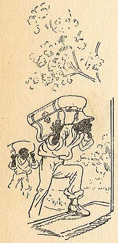

|
 MT's farce properly begins in the middle of a stormy night when two "extraordinary" men arrive at Aunt Patsy Cooper's house as boarders. They are Count Luigi and Count Angelo, whom no one in Dawson's Landing has seen. It may be irrelevant that the scene of their arrival actually begins with another pair of men, but the illustration here depicts this passage in MT's text: "At last there was a knock at the door and the anxious family jumped to open it. Two negro men entered, each carrying a trunk, and proceeded up-stairs toward the guest-room." These are the first "men" introduced into in the narrative or depicted in the illustrations. That they could not possibly be the boarders, even though they carry trunks and head for the guest room, is an assumption readers may share with the Coopers only because of the racist patterns that govern the world MT is writing about. The Barrett Collection, UVA PS 1317 .A1 1894 |